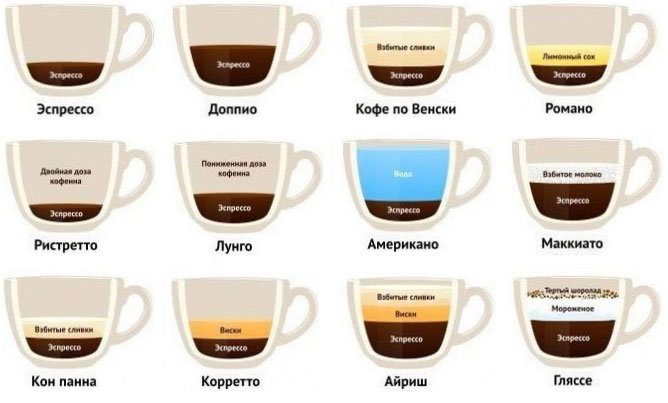

Виды кофейных напитков
Для нас, обычных потребителей, важно не только состав или сорт кофе, но и его рецепты. Виды кофейных напитков могут разниться по способу приготовления, а дополнительное своеобразие придают вкусовые добавки в разных пропорциях. К тому же, многие рецептов имеют собственные традиции употребления.
Много популярных способов приготовления и подачи кофе пришло к нам с Востока, но большинство рецептов кофе, которые вы встретите в кафе и ресторанах, имеют итальянское или европейское происхождение.
Эспрессо и виды кофе на его основе
- Эспрессо. Самый популярный вид кофе в Европе, готовится в кофемашине, требует специального, очень ровного помола. Готовят из смеси арабики и робусты, часто из специально собранных купажей. Для хорошо приготовленного кофе характерна плотная, устойчивая пенка светло-кремового цвета. Пьют после еды, в несколько глотков, так, чтобы кофе не успел остыть. Пенку перемешивают с жидкостью, для придания равномерного вкуса всему напитку. Стандартный объем порции – 35 грамм.
- Доппио. Двойной эспрессо. Пьют горячим, иногда с тростниковым сахаром.
- Кофе по-венски. Эспрессо, в который добавлена порция хорошо взбитых сливок. Сверху они посыпаются ароматными специями и шоколадом. Подают в чашках среднего или большого объема. Пьют в любое время дня и ночи, обычно с десертами или выпечкой. В процессе употребления такой кофе не принято перемешивать.
- Романо. Эспрессо по-римски. Готовят, как обычный эспрессо, подают с долькой лимона или длинной закрученной полоской лимонной цедры. Пьют после еды, без десертов и сладостей.
- Ристретто. Имеет очень маленький объем и низкое содержание кофеина. Для приготовления берется 5-7 грамм кофе на 25 грамм воды. Очень распространен в Италии, у нас популярность напитка гораздо ниже. Подают ристретто после обеда или ужина, без сахара, с бокалом холодной воды. Сначала делают несколько глотков воды, затем быстро выпивают ристретто. Вода нужна, чтобы очистить вкусовые рецепторы после приема пищи, и предотвратить обезвоживание после крепкого кофе.
- Лунго. Переходный вариант между эспрессо и американо. Можно сказать, американо по-итальянски. Объем эспрессо увеличивается в два раза за счет воды. Пьют после еды. Обычно такой рецепт выбирают те, кто хочет снизить порцию кофеина, но не готов отказаться от него совсем.
- Американо. Эспрессо, разбавленный водой. После приготовления основной порции в 30 мл, бариста прогоняет дополнительно еще 90-120 грамм воды, увеличивая объем без повышения крепости напитка. Пьют после еды или в перерывах между ней, с добавлением сахара, молока, сливок. Американо зачастую сопровождается десертами или печеньем.
- Макиато. В переводе с итальянского означает «пятнистый». Название получил за внешний вид. Это обычный эспрессо, на который сверху кладется ложка молочной пены. Пьют после приема пищи, не смешивая пену и кофе.
- Кон пана. Эспрессо, украшенный высокой шапкой взбитых сливок. Сверху посыпается корицей. Употребляется после еды, подается в чашке для капучино, из-за большой высоты сливочной пены. При употреблении ее можно перемешать с кофе.
- Коретто. После приготовления эспрессо в него добавляют столовую ложку крепкого алкоголя, чаще всего, виски или коньяка, реже джина, граппы или водки. Употребляют в холодное время года после еды, иногда с тростниковым сахаром или медом.
- Айриш. Эспрессо с крепким алкоголем и сливками, взбитыми в пену. Употребляется, как самостоятельный коктейль, подается в высоких бокалах. В классическом варианте сахар не кладется, но есть рецепты с добавлением различных топингов, например, шоколадного или сливочного.
- Гляссе. Эспрессо с шариком мороженого и мелкой шоколадной стружкой. Пьют в жаркое время года в охлажденном виде, подают в высоких бокалах с трубочкой.